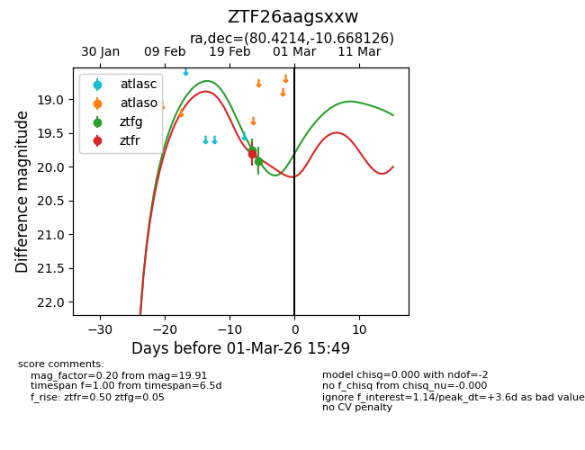
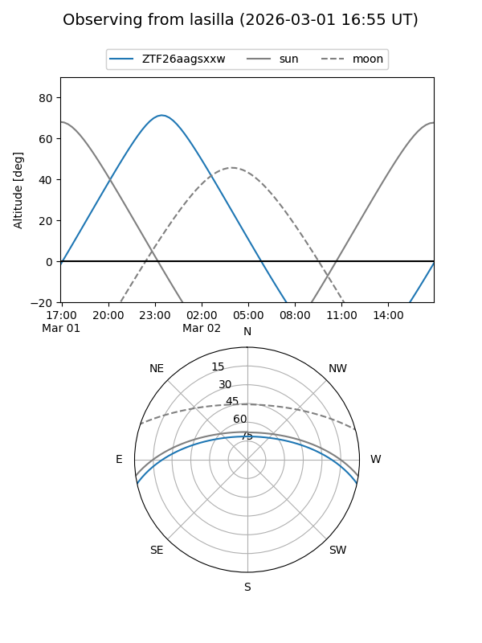
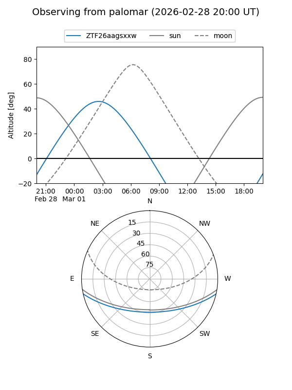
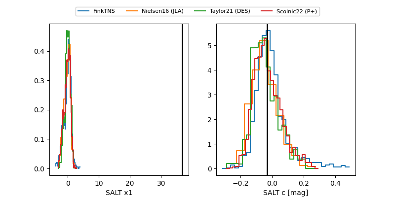

ZTF26aagsxxw
Target ZTF26aagsxxw at 2026-03-01 15:52
Aliases and brokers:
FINK: link
Lasair: link
ALeRCE: link
alt names
ZTF26aagsxxw (ztf,fink_ztf)
Coordinates:
equatorial (ra, dec) = 80.4214,-10.66813
equatorial (HMS+DMS) = 05:21:41.13,-10:40:05.26
galactic (l, b) = (212.5358,-24.72324)
Flags:
Photometry:
last ztfg=19.91, ztfr=19.81
2 ztfg, 1 ztfr detections
Lightcurve

Visibility


Additional plots
